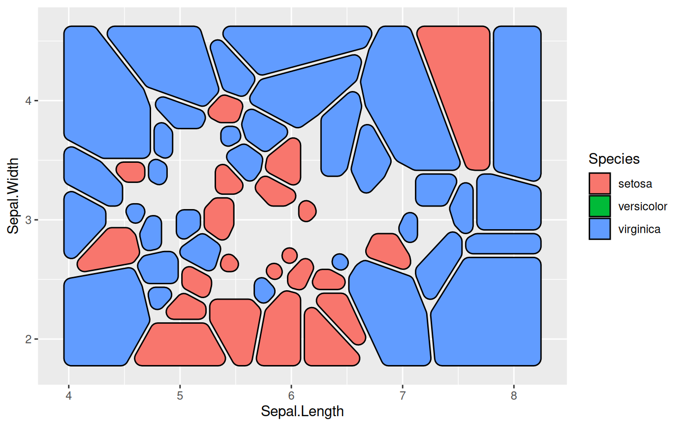
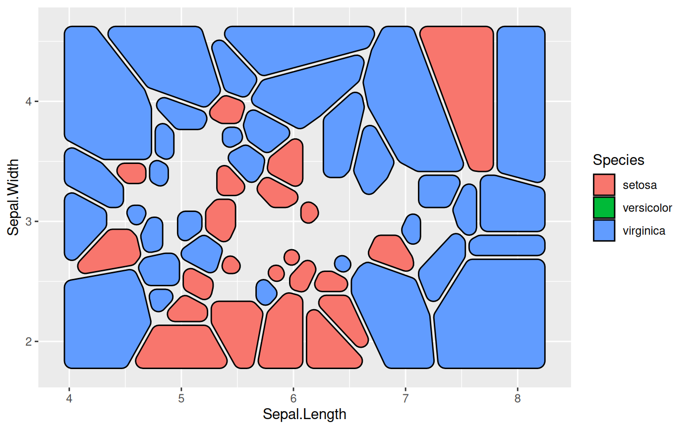
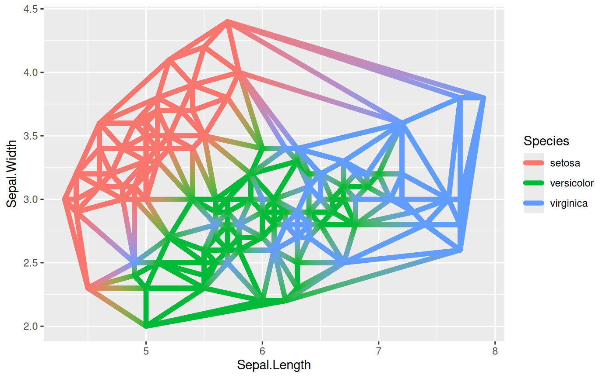
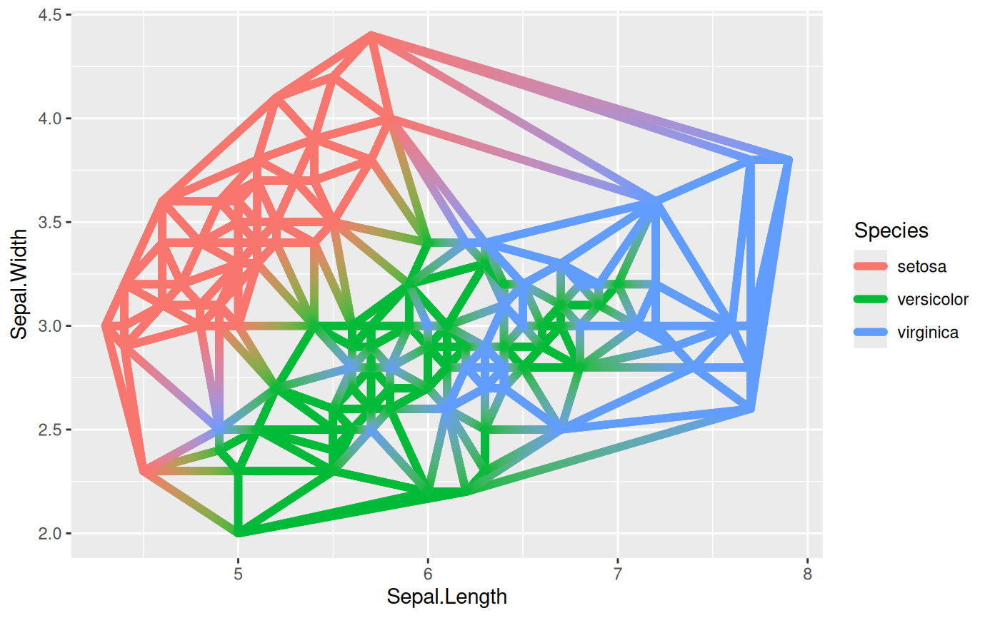

This set of geoms and stats allows you to display voronoi tesselation and
delaunay triangulation, both as polygons and as line segments. Furthermore
it lets you augment your point data with related summary statistics. The
computations are based on the deldir::deldir() package.
Usage
geom_voronoi_tile(
mapping = NULL,
data = NULL,
stat = "voronoi_tile",
position = "identity",
na.rm = FALSE,
bound = NULL,
eps = 1e-09,
max.radius = NULL,
normalize = FALSE,
asp.ratio = 1,
expand = 0,
radius = 0,
show.legend = NA,
inherit.aes = TRUE,
...
)
geom_voronoi_segment(
mapping = NULL,
data = NULL,
stat = "voronoi_segment",
position = "identity",
na.rm = FALSE,
bound = NULL,
eps = 1e-09,
normalize = FALSE,
asp.ratio = 1,
show.legend = NA,
inherit.aes = TRUE,
...
)
geom_delaunay_tile(
mapping = NULL,
data = NULL,
stat = "delaunay_tile",
position = "identity",
na.rm = FALSE,
bound = NULL,
eps = 1e-09,
normalize = FALSE,
asp.ratio = 1,
expand = 0,
radius = 0,
show.legend = NA,
inherit.aes = TRUE,
...
)
geom_delaunay_segment(
mapping = NULL,
data = NULL,
stat = "delaunay_segment",
position = "identity",
na.rm = FALSE,
bound = NULL,
eps = 1e-09,
normalize = FALSE,
asp.ratio = 1,
show.legend = NA,
inherit.aes = TRUE,
...
)
geom_delaunay_segment2(
mapping = NULL,
data = NULL,
stat = "delaunay_segment2",
position = "identity",
na.rm = FALSE,
bound = NULL,
eps = 1e-09,
normalize = FALSE,
asp.ratio = 1,
n = 100,
show.legend = NA,
inherit.aes = TRUE,
...
)
stat_delvor_summary(
mapping = NULL,
data = NULL,
geom = "point",
position = "identity",
na.rm = FALSE,
bound = NULL,
eps = 1e-09,
normalize = FALSE,
asp.ratio = 1,
show.legend = NA,
inherit.aes = TRUE,
...
)Arguments
- mapping
Set of aesthetic mappings created by
aes(). If specified andinherit.aes = TRUE(the default), it is combined with the default mapping at the top level of the plot. You must supplymappingif there is no plot mapping.- data
The data to be displayed in this layer. There are three options:
If
NULL, the default, the data is inherited from the plot data as specified in the call toggplot().A
data.frame, or other object, will override the plot data. All objects will be fortified to produce a data frame. Seefortify()for which variables will be created.A
functionwill be called with a single argument, the plot data. The return value must be adata.frame, and will be used as the layer data. Afunctioncan be created from aformula(e.g.~ head(.x, 10)).- stat
The statistical transformation to use on the data for this layer. When using a
geom_*()function to construct a layer, thestatargument can be used the override the default coupling between geoms and stats. Thestatargument accepts the following:A
Statggproto subclass, for exampleStatCount.A string naming the stat. To give the stat as a string, strip the function name of the
stat_prefix. For example, to usestat_count(), give the stat as"count".For more information and other ways to specify the stat, see the layer stat documentation.
- position
A position adjustment to use on the data for this layer. This can be used in various ways, including to prevent overplotting and improving the display. The
positionargument accepts the following:The result of calling a position function, such as
position_jitter(). This method allows for passing extra arguments to the position.A string naming the position adjustment. To give the position as a string, strip the function name of the
position_prefix. For example, to useposition_jitter(), give the position as"jitter".For more information and other ways to specify the position, see the layer position documentation.
- na.rm
If
FALSE, the default, missing values are removed with a warning. IfTRUE, missing values are silently removed.- bound
The bounding rectangle for the tesselation or a custom polygon to clip the tesselation to. Defaults to
NULLwhich creates a rectangle expanded 10\ vector giving the bounds in the following order: xmin, xmax, ymin, ymax. If supplied as a polygon it should either be a 2-column matrix or a data.frame containing anxandycolumn.- eps
A value of epsilon used in testing whether a quantity is zero, mainly in the context of whether points are collinear. If anomalous errors arise, it is possible that these may averted by adjusting the value of eps upward or downward.
- max.radius
The maximum distance a tile can extend from the point of origin. Will in effect clip each tile to a circle centered at the point with the given radius. If
normalize = TRUEthe radius will be given relative to the normalized values- normalize
Should coordinates be normalized prior to calculations. If
xandyare in wildly different ranges it can lead to tesselation and triangulation that seems off when plotted withoutggplot2::coord_fixed(). Normalization of coordinates solves this. The coordinates are transformed back after calculations.- asp.ratio
If
normalize = TRUEthe x values will be multiplied by this amount after normalization.- expand
A numeric or unit vector of length one, specifying the expansion amount. Negative values will result in contraction instead. If the value is given as a numeric it will be understood as a proportion of the plot area width.
- radius
As
expandbut specifying the corner radius.- show.legend
logical. Should this layer be included in the legends?
NA, the default, includes if any aesthetics are mapped.FALSEnever includes, andTRUEalways includes. It can also be a named logical vector to finely select the aesthetics to display.- inherit.aes
If
FALSE, overrides the default aesthetics, rather than combining with them. This is most useful for helper functions that define both data and aesthetics and shouldn't inherit behaviour from the default plot specification, e.g.borders().- ...
Other arguments passed on to
layer()'sparamsargument. These arguments broadly fall into one of 4 categories below. Notably, further arguments to thepositionargument, or aesthetics that are required can not be passed through.... Unknown arguments that are not part of the 4 categories below are ignored.Static aesthetics that are not mapped to a scale, but are at a fixed value and apply to the layer as a whole. For example,
colour = "red"orlinewidth = 3. The geom's documentation has an Aesthetics section that lists the available options. The 'required' aesthetics cannot be passed on to theparams. Please note that while passing unmapped aesthetics as vectors is technically possible, the order and required length is not guaranteed to be parallel to the input data.When constructing a layer using a
stat_*()function, the...argument can be used to pass on parameters to thegeompart of the layer. An example of this isstat_density(geom = "area", outline.type = "both"). The geom's documentation lists which parameters it can accept.Inversely, when constructing a layer using a
geom_*()function, the...argument can be used to pass on parameters to thestatpart of the layer. An example of this isgeom_area(stat = "density", adjust = 0.5). The stat's documentation lists which parameters it can accept.The
key_glyphargument oflayer()may also be passed on through.... This can be one of the functions described as key glyphs, to change the display of the layer in the legend.
- n
The number of points to create for each segment
- geom
The geometric object to use to display the data for this layer. When using a
stat_*()function to construct a layer, thegeomargument can be used to override the default coupling between stats and geoms. Thegeomargument accepts the following:A
Geomggproto subclass, for exampleGeomPoint.A string naming the geom. To give the geom as a string, strip the function name of the
geom_prefix. For example, to usegeom_point(), give the geom as"point".For more information and other ways to specify the geom, see the layer geom documentation.
Aesthetics
geom_voronoi_tile and geom_delaunay_tile understand the following aesthetics (required aesthetics are in bold):
x
y
alpha
color
fill
linetype
size
geom_voronoi_segment, geom_delaunay_segment, and geom_delaunay_segment2 understand the following aesthetics (required aesthetics are in bold):
x
y
alpha
color
linetype
size
Computed variables
stat_delvor_summary computes the following variables:
- x, y
If
switch.centroid = TRUEthis will be the coordinates for the voronoi tile centroid, otherwise it is the original point- xcent, ycent
If
switch.centroid = FALSEthis will be the coordinates for the voronoi tile centroid, otherwise it will beNULL- xorig, yorig
If
switch.centroid = TRUEthis will be the coordinates for the original point, otherwise it will beNULL- ntri
Number of triangles emanating from the point
- triarea
The total area of triangles emanating from the point divided by 3
- triprop
triareadivided by the sum of the area of all triangles- nsides
Number of sides on the voronoi tile associated with the point
- nedges
Number of sides of the associated voronoi tile that is part of the bounding box
- vorarea
The area of the voronoi tile associated with the point
- vorprop
vorareadivided by the sum of all voronoi tiles
Examples
# Voronoi
# You usually wants all points to take part in the same tesselation so set
# the group aesthetic to a constant (-1L is just a convention)
ggplot(iris, aes(Sepal.Length, Sepal.Width, group = -1L)) +
geom_voronoi_tile(aes(fill = Species)) +
geom_voronoi_segment() +
geom_text(aes(label = after_stat(nsides), size = after_stat(vorarea)),
stat = 'delvor_summary', switch.centroid = TRUE
)
#> Warning: `stat_voronoi_tile()` is dropping duplicated points
#> Warning: `stat_voronoi_segment()` is dropping duplicated points
#> Warning: `stat_delvor_summary()` is dropping duplicated points
 # Difference of normalize = TRUE (segment layer is calculated without
# normalisation)
ggplot(iris, aes(Sepal.Length, Sepal.Width, group = -1L)) +
geom_voronoi_tile(aes(fill = Species), normalize = TRUE) +
geom_voronoi_segment()
#> Warning: `stat_voronoi_tile()` is dropping duplicated points
#> Warning: `stat_voronoi_segment()` is dropping duplicated points
# Difference of normalize = TRUE (segment layer is calculated without
# normalisation)
ggplot(iris, aes(Sepal.Length, Sepal.Width, group = -1L)) +
geom_voronoi_tile(aes(fill = Species), normalize = TRUE) +
geom_voronoi_segment()
#> Warning: `stat_voronoi_tile()` is dropping duplicated points
#> Warning: `stat_voronoi_segment()` is dropping duplicated points
 # Set a max radius
ggplot(iris, aes(Sepal.Length, Sepal.Width, group = -1L)) +
geom_voronoi_tile(aes(fill = Species), colour = 'black', max.radius = 0.25)
#> Warning: `stat_voronoi_tile()` is dropping duplicated points
# Set a max radius
ggplot(iris, aes(Sepal.Length, Sepal.Width, group = -1L)) +
geom_voronoi_tile(aes(fill = Species), colour = 'black', max.radius = 0.25)
#> Warning: `stat_voronoi_tile()` is dropping duplicated points
 # Set custom bounding polygon
triangle <- cbind(c(3, 9, 6), c(1, 1, 6))
ggplot(iris, aes(Sepal.Length, Sepal.Width, group = -1L)) +
geom_voronoi_tile(aes(fill = Species), colour = 'black', bound = triangle)
#> Warning: `stat_voronoi_tile()` is dropping duplicated points
# Set custom bounding polygon
triangle <- cbind(c(3, 9, 6), c(1, 1, 6))
ggplot(iris, aes(Sepal.Length, Sepal.Width, group = -1L)) +
geom_voronoi_tile(aes(fill = Species), colour = 'black', bound = triangle)
#> Warning: `stat_voronoi_tile()` is dropping duplicated points
 # Use geom_shape functionality to round corners etc
ggplot(iris, aes(Sepal.Length, Sepal.Width, group = -1L)) +
geom_voronoi_tile(aes(fill = Species), colour = 'black',
expand = unit(-.5, 'mm'), radius = unit(2, 'mm'))
#> Warning: `stat_voronoi_tile()` is dropping duplicated points

# Delaunay triangles
ggplot(iris, aes(Sepal.Length, Sepal.Width)) +
geom_delaunay_tile(alpha = 0.3, colour = 'black')
#> Warning: `stat_delaunay_tile()` is dropping duplicated points
# Use geom_shape functionality to round corners etc
ggplot(iris, aes(Sepal.Length, Sepal.Width, group = -1L)) +
geom_voronoi_tile(aes(fill = Species), colour = 'black',
expand = unit(-.5, 'mm'), radius = unit(2, 'mm'))
#> Warning: `stat_voronoi_tile()` is dropping duplicated points

# Delaunay triangles
ggplot(iris, aes(Sepal.Length, Sepal.Width)) +
geom_delaunay_tile(alpha = 0.3, colour = 'black')
#> Warning: `stat_delaunay_tile()` is dropping duplicated points
 # Use geom_delauney_segment2 to interpolate aestetics between end points
ggplot(iris, aes(Sepal.Length, Sepal.Width)) +
geom_delaunay_segment2(aes(colour = Species, group = -1), size = 2,
lineend = 'round')
#> Warning: `stat_delaunay_segment2()` is dropping duplicated points

# Use geom_delauney_segment2 to interpolate aestetics between end points
ggplot(iris, aes(Sepal.Length, Sepal.Width)) +
geom_delaunay_segment2(aes(colour = Species, group = -1), size = 2,
lineend = 'round')
#> Warning: `stat_delaunay_segment2()` is dropping duplicated points
